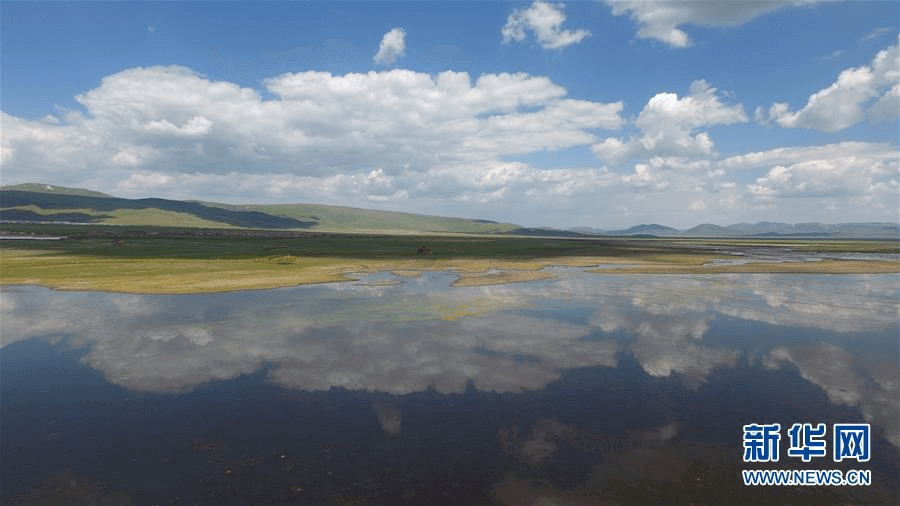

7月20日的新闻联播，用了近5分钟播发了中办国办关于甘肃祁连山生态环境问题的通报。联播之后的焦点访谈，又对此进行了延伸。问题之重，全国关注。
这则通报点名问责多位甘肃部级、厅级干部。长安街知事APP发现，就在这则通报发布前的两个月内，该省人大、政协会议公开了两个较为特别的人事变动。
2017年6月8日，甘肃省十二届人大常委会第三十三次会议通过决定：撤销蒲志强的甘肃省国土资源厅厅长职务。
2017年7月18日，政协甘肃省第十一届委员会常务委员会第十九次会议通过决定：撤销石卫东政协甘肃省委员会人口资源环境委员会副主任职务。
蒲志强出生于1965年，石卫东出生于1956年，对应岗位均属适龄领导。他们的离任，如今有了合理解释。
根据通报，中央纪委监察部按相关程序对祁连山生态环境问题负有主要领导责任的8名责任人进行严肃问责，其中——
给予甘肃省林业厅原党组书记、厅长，现任省政协常委、人口资源环境委员会副主任石卫东党内严重警告、行政撤职处分。
给予甘肃省国土资源厅厅长蒲志强行政撤职处分。
值得关注的是，在这8名责任人中，只有蒲志强没有被给予中共党纪处分。他是一位党外人士，2002年12月加入民革。在担任国土资源厅长之前，还做过12年的监察厅副厅长。
虽然是党外人士，但作为一名领导干部和公职人员，同样要受到纪律约束。通报中就提到“中央纪委和监察部共同进行问责”。纪委作出党纪处分，监察部门则作出行政处分。
而在北京、山西、浙江试点的监察体制改革，则更加明确了监察的范围和对象，用岐山书记的话说，就是要“实现对所有行使公权力的公职人员监察全覆盖”。
事实上，处分党政领导的干部制度依据，除了《中国共产党问责条例》和《中国共产党纪律处分条例》两部党内法规之外，还有一些专项“规矩”，适用于所有党政领导。
比如2015年8月下发的《党政领导干部生态环境损害责任追究办法（试行）》，就适用于县级以上地方各级党委和政府及其有关工作部门的领导成员。
政府有关工作部门领导成员主要有六种被追责的情形：
- 1、制定的规定或者采取的措施与生态环境和资源方面政策、法律法规相违背。
- 2、批准开发利用规划或者进行项目审批（核准）违反生态环境和资源方面政策、法律法规。